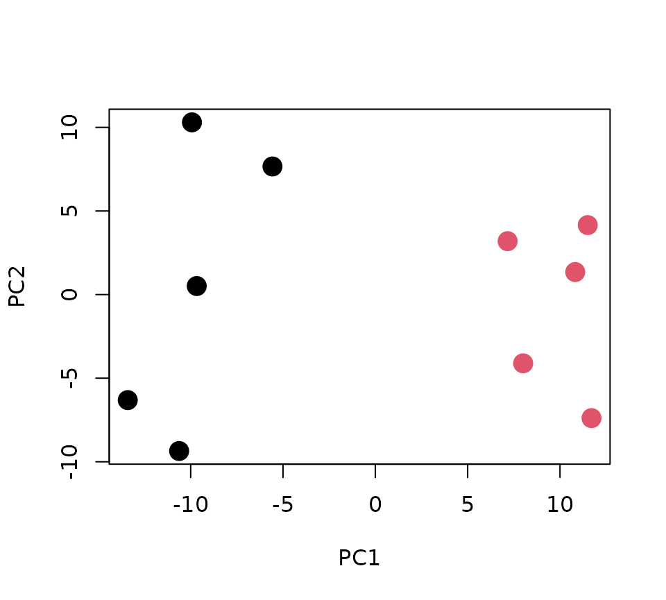
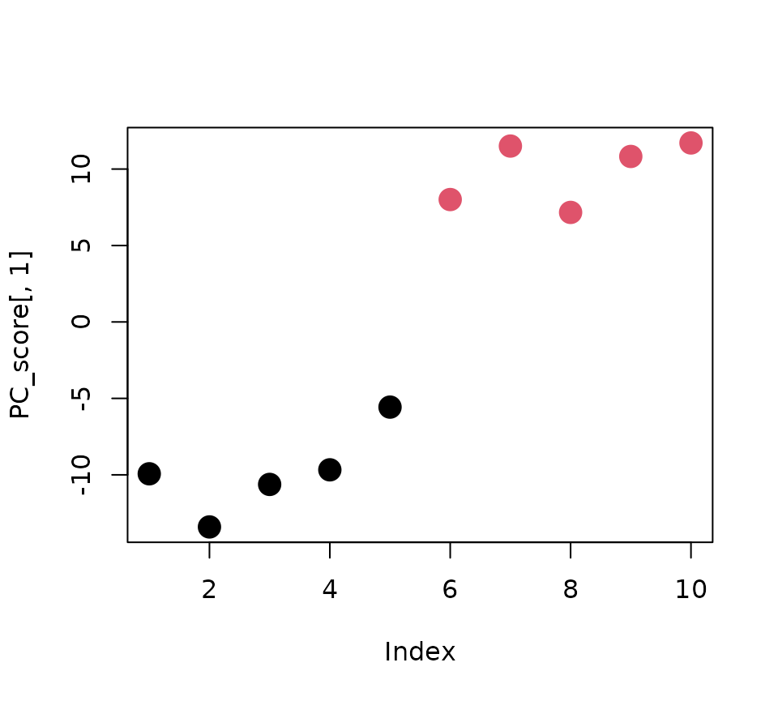

fastingの変数Xにメタボロームデータが含まれている．
主成分分析には，prcomp関数が用いられる．またここではデータをautoscaling(各代謝物毎に，平均0，分散1にする) によるスケーリングを行っている．第1主成分と第2主成分スコアをプロットしたものを以下に示す．
# PCA
pca <- prcomp(X,scale=TRUE) # autoscaling
# PC score
PC_score <- pca$x[,c(1,2)] # First and second PCs
# PC score plot
class <- c(1,1,1,1,1,2,2,2,2,2)
plot(PC_score, col=class, pch=16, cex=2)
黒丸が通常飼育，赤丸が12時間絶食後のマウスを表している．
主成分分析の結果より，第1主成分で群間差が確認されたことから，第1主成分スコアと関連する代謝物を確認することで，12時間の絶食で低値もしくは高値を示す代謝物を確認することが出来る．
次に実際に第1主成分スコアと関連する代謝物を主成分係数を用いて確認する．主成分係数の値が正または負に大きな上位10個の代謝物は次のようになる．
# weight / PC coefficient / eigenvector
PC_weight <- pca$rotation
# PC1 weight
PC1_weight <- pca$rotation[,1]
# top 10 metabolites (positively correlated)
PC1_weight[order(PC1_weight, decreasing=TRUE)[1:10]]## Ethanolamine phosphate 3-Aminobutyric acid
## 0.09225381 0.09122681
## Pyridoxal O-Succinylhomoserine
## 0.09079419 0.08883521
## 3-Hydroxybutyric acid Choline
## 0.08819795 0.08775669
## Adipic acid Carnitine
## 0.08766638 0.08746767
## Suberic acid N-Acetylglucosamine 6-phosphate
## 0.08578445 0.08566279
# top 10 metabolites (negatively correlated)
PC1_weight[order(PC1_weight, decreasing=FALSE)[1:10]]## Betonicine S-Lactoylglutathione
## -0.09214178 -0.09199026
## Glucose 1-phosphate Glucose 6-phosphate
## -0.09156145 -0.09153070
## Stachydrine Fructose 6-phosphate
## -0.09034003 -0.08966964
## Pyruvic acid GDP-mannose ; GDP-galactose
## -0.08958449 -0.08932628
## 5-Aminovaleric acid Lactic acid
## -0.08885122 -0.08882916主成分係数の値を見れば，相対的に主成分スコアと関連する代謝物を見つけることが出来るが， その値の大きさがどの程度まで関連する代謝物と言えるのか判断することが難しい．
主成分係数と主成分負荷量の関係を確認するために，横軸に主成分係数，縦軸に主成分負荷量の散布図を以下に示す．
# explain of PC coefficient
R <- NULL
for(i in 1:ncol(X)){
R[i] <- cor.test(PC_score[,1],X[,i])$estimate
}
plot(PC1_weight,R, xlab = "PC coefficient", ylab="PC loading")
主成分負荷量は，主成分スコアの分散の平方根を主成分係数に掛けることで計算することが出来る．
loadingsパッケージを用いた主成分負荷量は，pca_loading関数を用いて，以下のように簡単に計算することが出来る．
pca <- pca_loading(pca)
PC_loading <- pca$loading$R
p <- pca$loading$p.valueまた主成分負荷量の統計的仮説検定により，p-valueを用いて有意な代謝物を選ぶことも出来る．[Yamamoto et al., BMC Bioinformatics, (2014) 15(1):51.]
実際に，第1主成分負荷量を用いて第1主成分スコアと関連する代謝物を選ぶ手順を次に示す．
PC1_loading <- PC_loading[,1]
# top 10 metabolites (positively correlated)
PC1_loading[order(PC1_loading, decreasing=TRUE)[1:10]]## Ethanolamine phosphate 3-Aminobutyric acid
## 0.9810803 0.9701587
## Pyridoxal O-Succinylhomoserine
## 0.9655579 0.9447249
## 3-Hydroxybutyric acid Choline
## 0.9379480 0.9332554
## Adipic acid Carnitine
## 0.9322950 0.9301818
## Suberic acid N-Acetylglucosamine 6-phosphate
## 0.9122814 0.9109877
# top 10 metabolites (negatively correlated)
PC1_loading[order(PC1_loading, decreasing=FALSE)[1:10]]## Betonicine S-Lactoylglutathione
## -0.9798890 -0.9782776
## Glucose 1-phosphate Glucose 6-phosphate
## -0.9737174 -0.9733904
## Stachydrine Fructose 6-phosphate
## -0.9607281 -0.9535988
## Pyruvic acid GDP-mannose ; GDP-galactose
## -0.9526933 -0.9499474
## 5-Aminovaleric acid Lactic acid
## -0.9448953 -0.9446607第1主成分負荷量が0.7以上の代謝物は45物質，-0.7以下の代謝物70物質， 第1主成分負荷量の統計的仮説検定の結果p<0.05の代謝物は138物質， Benjamini-Hochberg法によるq-valueが0.05未満の代謝物は102物質であることが以下のように確認できる．
# Number of positively correlated metabolties
sum(PC1_loading>=0.7)## [1] 45
# Number of negatively correlated metabolties
sum(PC1_loading<=-0.7)## [1] 70
# Statistical hypothesis testing of PC loading
p_PC1 <- pca$loading$p.value[,1]
# Number of significant metabolites under p<0.05
sum(p_PC1 < 0.05)## [1] 138## [1] 102最後に，第1主成分スコアと最も相関の高い代謝物は，それぞれEthanolamine phosphateとBetonicineであり， その値はそれぞれEthanolamine phosphate(R=0.981, p=5.48×10^-7, q=8.92×10^-5)，Betonicine(R=-0.980, p=6.99×10^-7, q=8.92×10^-5)であった．
# Ethanolamine phosphate (top 1 positively correlated metabolite with PC1 score)
par(mfrow=c(1,2))
plot(PC_score[,1], col=class, pch=16, cex=2, xlab="Sample", ylab="PC1")
plot(X[,order(PC1_loading, decreasing=TRUE)[1]],col=class, pch=16, cex=2, xlab ="Sample", ylab="Ethanolamine phosphate")
上図の左が第1主成分スコア，右がEthanolamine phosphateである．主成分負荷量(相関係数)の値が0.981と非常に高い値を示すことから分かるように，非常に良く似た傾向を示すことが確認できる．
# Betonicine (top 1 negatively correlated metabolite with PC1 score)
par(mfrow=c(1,2))
plot(PC_score[,1], col=class, pch=16, cex=2, xlab="Sample", ylab="PC1")
plot(X[,order(PC1_loading, decreasing=FALSE)[1]],col=class, pch=16, cex=2,xlab ="Sample", ylab="Betonicine")上図の左が第1主成分スコア，右がBetonicineである．こちらは主成分負荷量(相関係数)の値が-0.980であり負に非常に高い値を示すことから，逆の傾向を示すことが確認できる．